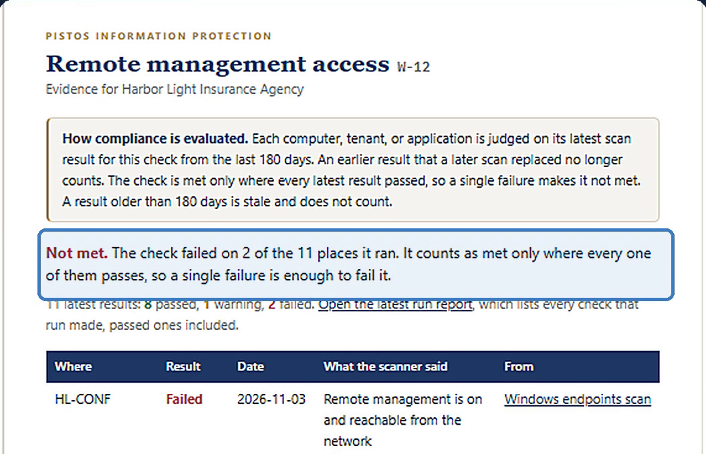
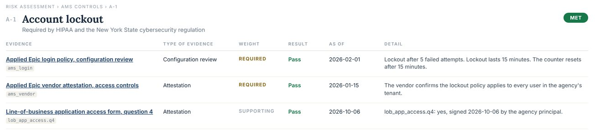

Hundreds of organizations across the financial services, healthcare, and defense contracting industries trust Pistos to help them meet their cybersecurity and regulatory compliance obligations.
Pistos clients have undergone dozens of cybersecurity audits by insurance carriers, independent auditors, and the New York Department of Financial Services, with a 100% success rate.
PCS was designed by former senior executives and partners at Accenture, EY, PwC and Wipro.
Based on your company’s industry, size, and business model, PCS automatically identifies the regulations that apply to your business and translates each requirement into a plain-English question you can answer.

Skopein scans your computers and applications, and PCS attaches each result to the control it supports.

When an auditor or regulator asks, PCS presents each control, its compliance status, and the evidence behind it.

Skopein scans your computers and applications for security vulnerabilities without making any changes to your systems. Based on the scan results, PCS generates remediation scripts to address the vulnerabilities identified. You decide which vulnerabilities to fix and whether to use the scripts provided.
Skopein is the scanning engine built into PCS. Its internal, external, database, firewall, and web application scanners perform hundreds of checks without making any changes to your systems, and AI keeps those checks current.
PCS writes management and technical reports specific to your business.
PCS produces training videos and exercises relevant to your business.
PCS writes remediation scripts for a broad range of programming languages and SQL platforms.
AI maintains the scanners and keeps their checks current.
PCS writes your system documentation and keeps it current.
Respond to carrier security questionnaires with evidence that’s already on file.
Document the safeguards that GLBA requires and produce the evidence on request.
Prepare for NIST SP 800-171 and CMMC 2.0 assessments without hiring dedicated security staff.
Maintain documented HIPAA safeguards that are ready for review at any time.

Pistos was founded by Pete Sfoglia, a former EY and Accenture partner. His work on security governance has been published in National Defense Magazine and Insurance Journal. Pete’s team includes other senior executives in management consulting, supported by AI-focused systems engineers and data scientists.
“Our carrier partners were pressing us on HIPAA compliance. We had no program, and they knew it. Our Pistos CISO took control and built it from the ground up: policies, procedures, and the security tool configurations to back them up. The partners have stopped asking.”